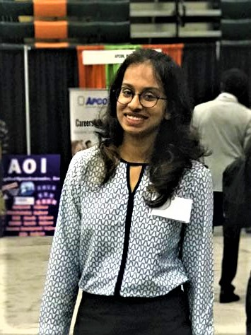

In my undergraduate degree, I was a part of many societies and varcities. I was the Publicity and Marketing head of Computer Society of India's chapter at my college; which is a country wide organization in India with its student branches in many colleges. I was also a part of the Organizing Committee of Alegria, which is one of the largest student festival in India.
I am a diligent, enthusiastic and versatile student with many interests and strengths. I am currently pursuing my Master Degree in Computer Science at University of Texas at Dallas. In this semester, I have taken Web Programming Languages, Natural Language Processing and Design and Analysis of Algorithms. I had taken Machine Learning, Human Computer Interaction and Advanced Operating Systems in my previous semester. The projects in my Machine Learning course helped me get a deeper insight into the world of data . We participated in the Kaggle based competition and were ranked among top 100 teams all over the world. I am currently looking for an internship in the field of Data Science/ Machine Learning as well as Software Development. If you feel I am eligible for the post at your company, kindly send me a mail at swetha.ramaswamy@utdallas.edu .
Hi! Welcome to my corner of the world. Explore this page to know more about me.
About Me
I am a Software Developer with a keen interest in Data Science and Machine Learning. I interned with a company called Osmos Multimedia in 2015. After working with the CEO on Data Processing and Research projects, my interest in the field increased. My final year of Engineering project was on Natural Language Processing and Machine Learning wherein we performed Text Normalization of Hindi+English data and also performed Sentiment Analysis on that data.In my undergraduate degree, I was a part of many societies and varcities. I was the Publicity and Marketing head of Computer Society of India's chapter at my college; which is a country wide organization in India with its student branches in many colleges. I was also a part of the Organizing Committee of Alegria, which is one of the largest student festival in India.
I am a diligent, enthusiastic and versatile student with many interests and strengths. I am currently pursuing my Master Degree in Computer Science at University of Texas at Dallas. In this semester, I have taken Web Programming Languages, Natural Language Processing and Design and Analysis of Algorithms. I had taken Machine Learning, Human Computer Interaction and Advanced Operating Systems in my previous semester. The projects in my Machine Learning course helped me get a deeper insight into the world of data . We participated in the Kaggle based competition and were ranked among top 100 teams all over the world. I am currently looking for an internship in the field of Data Science/ Machine Learning as well as Software Development. If you feel I am eligible for the post at your company, kindly send me a mail at swetha.ramaswamy@utdallas.edu .
Projects
-
KAGGLE:
Participated in the Kaggle based WSDM competition for churn prediction of an online music prediction website. Ranked among the top 100 teams. -
MACHINE LEARNING:
Developed various projects implementing the Machine Learning Algorithms such as Neural Networks, Decision Tress, KNN, Random Forest, etc. -
SOCKET PROGRAMMING:
Implemented the Global Snapshot Algorithm using Lamport’s Clock, Implemented the Three Phase Commit Protocol, Developed a comparative study of Suzuki – Kasami and Raymond’s algorithm for Distributed Mutual Exclusion. -
HACKATHON:
Developed a web application in Python and JavaScript that helps students to learn new concepts based on Spaced Repetition. -
ANDROID:
Developed a Contact Manager App and Atari Breakout App. -
Engineering Final Year Project:
Developed a software that performs Text normalization of code-mixed(hindi-english) data and sentiment analysis on that data using Java and C. -
Internship Experience:
Performed an Internship during the period of June-July 2015 on “Data Processing and Research” in Osmos Multimedia Ltd Andheri, Mumbai and worked on Extraction, Transformation and Loading of data.
Contact Information
- EMAIL: swetha.ramaswamy@utdallas.edu
- PHONE: +1-469-503-5875